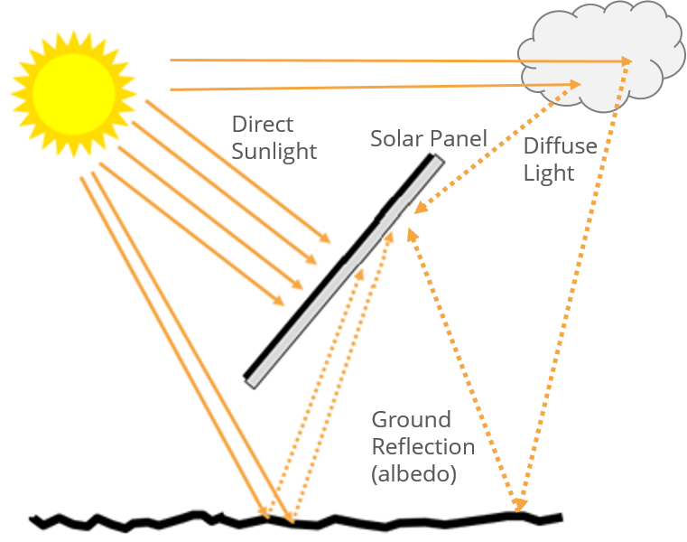

Introduction¶
Due to new bifacial technologies and larger utility-scale photovoltaic (PV) arrays, there is a growing need for models that can more accurately account for the multiple diffuse light components and reflections incident on the front and back surfaces of a PV array.

Fig. 1: Schematic showing how a PV module can receive light on its back-surface
Ray tracing models are often chosen for their high level of accuracy, but in order to reach such precision they often become computationally intensive and slower to run.
The view factor model presented here is exploring the possibility of using a simplified method for the calculation of bifacial irradiance. The method presented here is an application of view factors for a 2D geometry of an array of single-axis trackers, invariant by translation along the tracker axis. It can be used for energy production calculation of large PV arrays thanks to its high computational speed, and also because edge effects occurring in large PV arrays are negligible.
The goal of the view factor model is to provide fast and accurate irradiance calculations to understand diffuse shading and bifacial effects better.

{kind=link}